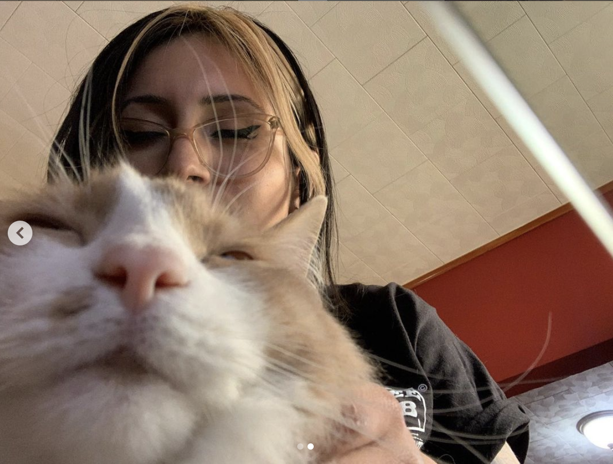

Background
We met in 2017 at the San Antonio Humane Society. The shelter called him Gravy, but I named him after a fictional cat in a series of songs by a band called The Weakerthans. We lived there for a few months before we moved back to New Jersey for me to finish school.
The Last Four Years
We lived in Jersey City while I finished my studies. Here are some more photos of us.
Present
Now we live in Philadelphia, while I try to break into web development and he hangs out on the couch.